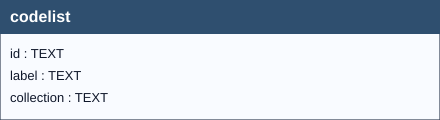

Codelists in the SO (Soil) INSPIRE domain are essential for ensuring a standardized representation of soil data across the European Union. They enable consistent classification and encoding of specific values (e.g., soil types, usage categories) across different languages and applications, ensuring interoperability and semantic integrity in environmental datasets.
Important
Although the codelist table has no relationship with other tables, its presence is crucial for the correct data management and control. Essentially, if a coded value is in the table, it is supposed to be valid; if not, the code is to be considered as incorrect, and the relative value isn’t stored.
Note
It includes replicates of all SO domain valid codes extracted from the INSPIRE registry (https://inspire.ec.europa.eu/registry).
The presence of the codelist table in the Geopackage allows forms for displaying dropdown lists, simplifying the data entry. However, up to now (12/2025), not all the mandatory items foreseen in the INSPIRE SOIL UML structure have been populated into the INSPIRE registry. For those mandatory items foreseen in the INSPIRE SOIL UML structure for which there is not yet a published codelis inside the INSPIRE registry, that is, for WRBdiagnostichorizon, ProcessParameterNameValue,WRBReferenceSoilGroupValue (2014),WRBReferenceSoilGroupValue (2022),WRBQualifierValue (2022) and RBSpecifierValue (2022), we made reference to other officially mainatined controlled vocabularies by means of URI.
Moreover, internal codelists have also been added to the overmentioned table to manage forms more efficiently. INSPIRE registry
Code lists are controlled sets of concepts (not mere strings) that provide admissible values for encoded data properties.
In practice, they ensure semantic uniformity and interoperability: all producers and users choose values from the same “concept list”, which is documented, versioned, and published with persistent URIs.
These are the “institutional” lists provided or referenced by INSPIRE for the Soil theme, used for classifications and properties defined in the Technical Guidelines (e.g., LayerTypeValue, WRBQualifierPlaceValue, etc.).
These lists guarantee compatibility across European datasets and are part of INSPIRE’s normative/technical foundation. 1 2
Many data domains adopt specific code lists both for observable properties (i.e., what is being observed/measured) and for result categories (i.e., how the outcome is classified when it is qualitative rather than numeric).
These lists are typically represented with SKOS, which models each entry as a concept with multilingual labels, notations, definitions, and hierarchical relationships; this enables stable Web identifiers (URIs), Linked Data publication, and explicit versioning. 3
On the observation side, integration with the SOSA/SSN (W3C/OGC) models clarifies the role of ObservedProperty, procedures, and Result, providing a formal basis to link an observable property to the code list of admissible values and, when needed, to the code list of result classes.
In short, code lists for observable properties and results:
INSPIRE Data Specification on Soil – Technical Guidelines, D2.8.III.3_v3.2.0.
https://inspire-mif.github.io/technical-guidelines/data/so/dataspecification_so.html
INSPIRE Data Specification on Soil – Technical Guidelines (landing page).
https://knowledge-base.inspire.ec.europa.eu/publications/inspire-data-specification-soil-technical-guidelines_en
Controlled Vocabularies and SKOS (learning module: text + video).
https://campus.dariah.eu/resources/hosted/controlled-vocabularies-and-skos
Semantic Sensor Network Ontology (SSN) – W3C Recommendation (2017), SOSA/SSN core module.
https://www.w3.org/TR/vocab-ssn/
``

codelist| Name | Type | Constraints | Description |
|---|---|---|---|
id |
TEXT |
Codelist Voice Uri, and Primary Key of the Table. | |
label |
TEXT |
A word or phrase used to name or describe something, often to identify or classify it. | |
collection |
TEXT |
Structured set of related elements, which share common characteristics and are managed with unique and persistent identifiers. |
| Name | Unique | Columns | Origin | Partial |
|---|---|---|---|---|
idx_codelist_collection_id |
No | collection, id |
c |
No |
Field: soilinvestigationpurpose
Codelist: SoilInvestigationPurposeValue
Codelist Authority: INSPIRE
Codelist URL: http://inspire.ec.europa.eu/codelist/SoilInvestigationPurposeValue
Field: soilplottype
Codelist: SoilPlotTypeValue
Codelist Authority: INSPIRE
Codelist URL: http://inspire.ec.europa.eu/codelist/SoilPlotTypeValue
Field: wrbversion
The following table lists the available values for the wrbversion internal codelist, which is used to identify the reference year of the WRB soil classification adopted.
| ID (URI) | Label | Collection |
|---|---|---|
| https://inspire.ec.europa.eu/codelist/WRBReferenceSoilGroupValue | WRB 2006 | wrbversion |
| https://agroportal.lirmm.fr/ontologies/WRB_2014-2015 | WRB 2014 | wrbversion |
| https://obrl-soil.github.io/wrbsoil2022/ | WRB 2022 | wrbversion |
Codelists used for the wrbreferencesoilgroup field depending on the selected wrbversion.
Note
Internal codelists have been defined to address specific operational scenarios. These codelists are used both to implement rule enforcement via database triggers and to manage dropdown list values within QGIS.
Field: wrbreferencesoilgroup
Codelist: WRBReferenceSoilGroupValue (2006)
Codelist Authority: INSPIRE
Codelist URL: http://inspire.ec.europa.eu/codelist/WRBReferenceSoilGroupValue
Field: wrbreferencesoilgroup
Codelist: WRBReferenceSoilGroupValue (2014)
Codelist Authority: AGROPORTAL
Codelist URL: https://agroportal.lirmm.fr/ontologies/AGROVOC/
Field: wrbreferencesoilgroup
Codelist: WRBReferenceSoilGroupValue (2022)
Codelist Authority: ORBL-SOIL
Codelist URL: https://obrl-soil.github.io/wrbsoil2022/
Field: othersoilname_type
Codelist: OtherSoilNameTypeValue
Codelist Authority: INSPIRE
Codelist URL: https://inspire.ec.europa.eu/codelist/OtherSoilNameTypeValue
Warning
The INSPIRE codelist is defined; however, it is currently empty and does not contain any code values. Consequently, this table cannot be populated. Users are advised to define a project-specific codelist and implement it within the GeoPackage in accordance with the schema and guidance described on this page.
Field: layertype
Codelist: LayerTypeValue
Codelist Authority: INSPIRE
Codelist URL: http://inspire.ec.europa.eu/codelist/LayerTypeValue
Field: layerrocktype
Codelist: LithologyValue
Codelist Authority: INSPIRE
Codelist URL: http://inspire.ec.europa.eu/codelist/LithologyValue
Field: layergenesisprocess
Codelist: EventProcessValue
Codelist Authority: INSPIRE
Codelist URL: http://inspire.ec.europa.eu/codelist/EventProcessValue
Field: layergenesisenviroment
Codelist: EventEnvironmentValue
Codelist Authority: INSPIRE
Codelist URL: http://inspire.ec.europa.eu/codelist/EventEnvironmentValue
Field: layergenesisprocessstate
Codelist: LayerGenesisProcessStateValue
Codelist Authority: INSPIRE
Codelist URL: http://inspire.ec.europa.eu/codelist/LayerGenesisProcessStateValue
Fields: faohorizonmaster_1 - faohorizonmaster_2
Codelist: FAOHorizonMaster
Codelist Authority: INSPIRE
Codelist URL: https://inspire.ec.europa.eu/codelist/FAOHorizonMasterValue
Fields: faohorizonsubordinate_1 - faohorizonsubordinate_2 - faohorizonsubordinate_3
Codelist: FAOHorizonSubordinate
Codelist Authority: INSPIRE
Codelist URL: https://inspire.ec.europa.eu/codelist/FAOHorizonSubordinateValue
Field: faoprime
Codelist: FAOPrime
Codelist Authority: INSPIRE
Codelist URL: http://inspire.ec.europa.eu/codelist/FAOPrimeValue
Field: horizonnotation
Codelist: OtherHorizonNotationTypeValue
Codelist Authority: ORBL‑SOIL
Codelist URL: https://obrl-soil.github.io/wrbsoil2022/chapter-03.html#sec-diagh
Field: qualifierplace
Codelist: WRBQualifierPlaceValue
Codelist Authority: INSPIRE
Codelist URL: http://inspire.ec.europa.eu/codelist/WRBQualifierPlaceValue
Field: wrbqualifier
Codelist: WRBQualifierValue (2006)
Codelist Authority: INSPIRE
Codelist URL: http://inspire.ec.europa.eu/codelist/WRBQualifierValue
Field: wrbqualifier
Codelist: WRBQualifierValue (2022)
Codelist Authority: ORBL‑SOIL
Codelist URL: https://obrl-soil.github.io/wrbsoil2022/
Field: wrbqualifier
Codelist: WRBSpecifierValue (2014)
Codelist Authority: WRB 2014-2015
Codelist URL: http://stats-class.fao.uniroma2.it/wrbsoil2014/
Fields: wrbspecifier_1 - wrbspecifier_2
Codelist: WRBSpecifierValue (2006)
Codelist Authority: INSPIRE
Codelist URL: http://inspire.ec.europa.eu/codelist/WRBSpecifierValue
Fields: wrbspecifier_1 - wrbspecifier_2
Codelist: WRBSpecifierValue (2022)
Codelist Authority: ORBL‑SOIL
Codelist URL: https://obrl-soil.github.io/wrbsoil2022/
Fields: wrbspecifier_1 - wrbspecifier_2
Codelist: WRBSpecifierValue (2014)
Codelist Authority: UNCCD
Codelist URL: https://catalogue.unccd.int/402_a-i3794e.pdf
codelist Table for Codespace ManagementThis chapter explains how to correctly populate the codelist table in a GeoPackage/SQLite database so that codespaces are managed consistently and database triggers behave as intended.
In addition, it introduces the role of code lists for observable properties, i.e., the controlled vocabularies that define what can be observed or measured in your data model.
Observable‑property code lists enumerate the set of admissible concepts used to identify what is being observed (e.g., soil color, structure, texture class, horizon boundary distinctness). They are concept‑based (not free text) and typically include:
The codespace table will include:
coatingNatureValueCode)…-C, …-CC, etc.)Tip
Always insert the codespace list first (top-level), then its elements.
Each codespace list requires:
id: A unique URI or key for the listlabel: A human-readable name for the listcollection: Always set to 'Category'Example:
INSERT INTO codelist (id, label, collection)
VALUES ('http://w3id.org/glosis/model/codelists/coatingNatureValueCode',
'coatingNatureValueCode',
'Category');
For each element in the codespace:
id: A unique URI or key for the element (e.g., …-C, …-CC)label: A descriptive label for the elementcollection: The id of the codespace list created in Step 1Important
The value of the collection element SHALL be equal to, and reference, the same URI defined in the id field of the top-level codespace list.
Example:
INSERT INTO codelist (id, label, collection)
VALUES('http://w3id.org/glosis/model/codelists/coatingNatureValueCode-C',
'Clay',
'http://w3id.org/glosis/model/codelists/coatingNatureValueCode'),
INSERT INTO "codelist" (id, label, collection)
VALUES ('http://w3id.org/glosis/model/codelists/coatingNatureValueCode-CC',
'Calcium carbonate',
'http://w3id.org/glosis/model/codelists/coatingNatureValueCode'),
INSERT INTO "codelist" (id, label, collection)
VALUES ('http://w3id.org/glosis/model/codelists/coatingNatureValueCode-CH',
'Clay and humus (organic matter)',
'http://w3id.org/glosis/model/codelists/coatingNatureValueCode');
After executing the above statements, the codelist table will look like this:
| id | label | collection |
|---|---|---|
| http://w3id.org/glosis/model/codelists/coatingNatureValueCode | coatingNatureValueCode | Category |
| http://w3id.org/glosis/model/codelists/coatingNatureValueCode-C | Clay | http://w3id.org/glosis/model/codelists/coatingNatureValueCode |
| http://w3id.org/glosis/model/codelists/coatingNatureValueCode-CC | Calcium carbonate | http://w3id.org/glosis/model/codelists/coatingNatureValueCode |
| http://w3id.org/glosis/model/codelists/coatingNatureValueCode-CH | Clay and humus (organic matter) | http://w3id.org/glosis/model/codelists/coatingNatureValueCode |